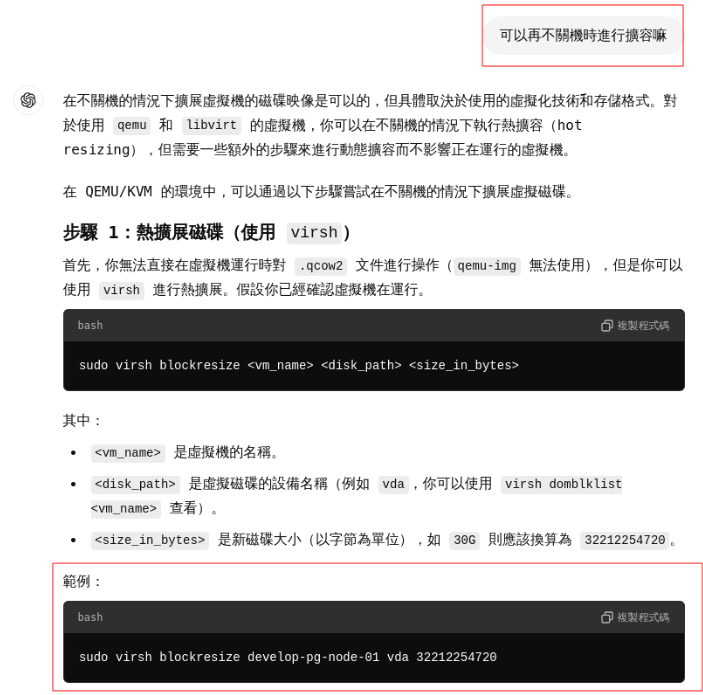
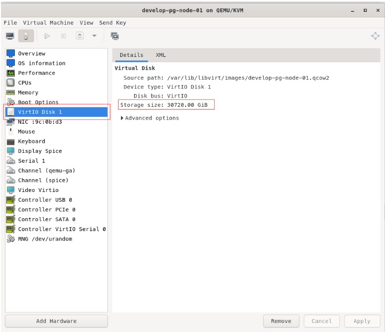

TL;DR
剛剛在練習 KVM 指令時 一些不懂的地方直接問 Cheap GPT 遇到 AI 幻覺。在執行虛擬磁碟擴容到 60G 照著 GPT 指示做，結果擴充到 30TB。好險是在實驗室進行操作練習，如果是在正式環境可能或造成難以收復的系統災難。
錯誤指令如下
sudo virsh blockresize develop-pg-node-01 vda 32212254720
過程
詢問 AI 的紀錄

執行過程
╱ ~/Documents/wezoom/wezoom/wezoom-ISMS at 21:38:31
❯ sudo virsh blockresize develop-pg-node-01 vda 32212254720
Block device 'vda' is resized
結果
變成 30 TB，fuxxxxxxxxxxx !!! 我的實體硬碟也才 2T，嚴重超賣呀!!!

從虛擬機看也是一樣

此次錯誤解決方式
進行虛擬磁碟縮容
sudo qemu-img resize --shrink /var/lib/libvirt/images/develop-pg-node-01.qcow2 60G
預防方式
多多在 LAB 實驗操作練習吧。畢竟查 AI 或是各式文件100 次不如親手操作一次